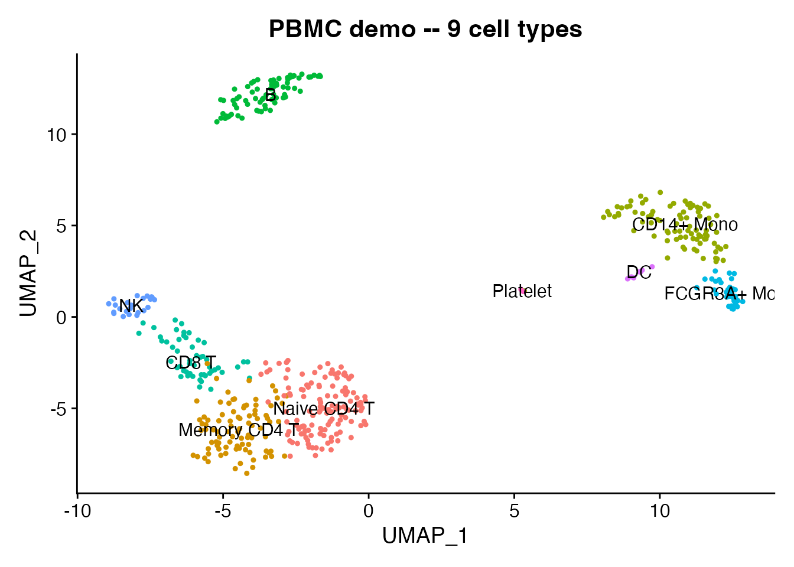
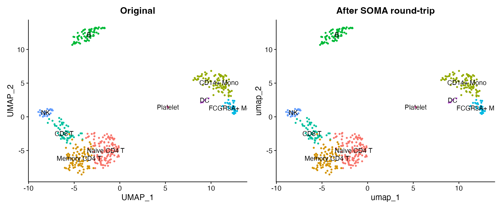
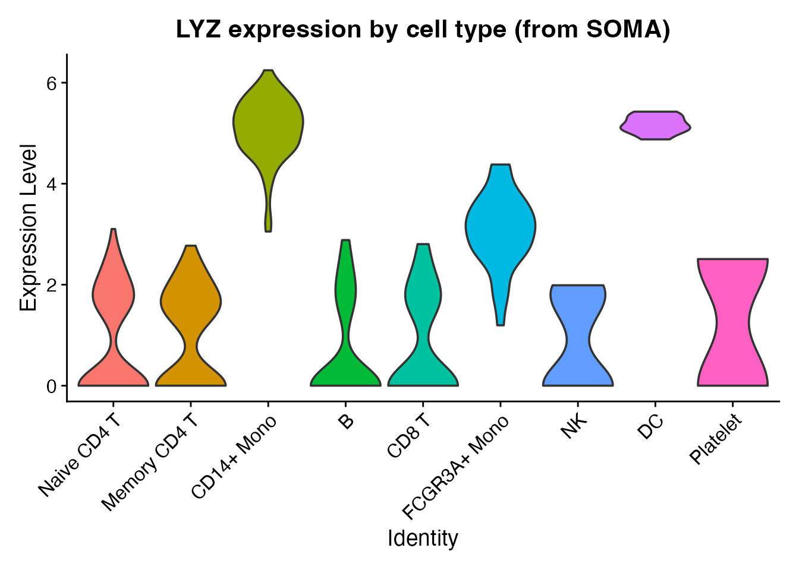

Introduction
TileDB-SOMA
is a cloud-native, array-based format for single-cell data. It is the
storage backend behind CELLxGENE
Census, which hosts 61M+ cells across 900+ datasets. SOMA supports
efficient slicing by cells or features without loading the full dataset,
making it ideal for working with large atlases. scConvert provides
writeSOMA() and readSOMA() for Seurat
interoperability. Both functions require the tiledbsoma R
package.
Load demo data
We use a 500-cell PBMC dataset that ships with scConvert. It has 9 annotated cell types, PCA/UMAP embeddings, and neighbor graphs.
pbmc <- readRDS(system.file("extdata", "pbmc_demo.rds", package = "scConvert"))
pbmc
#> An object of class Seurat
#> 2000 features across 500 samples within 1 assay
#> Active assay: RNA (2000 features, 2000 variable features)
#> 2 layers present: counts, data
#> 2 dimensional reductions calculated: pca, umap
DimPlot(pbmc, reduction = "umap", group.by = "seurat_annotations",
label = TRUE, pt.size = 0.8) +
ggtitle("PBMC demo -- 9 cell types") + NoLegend()
Write to SOMA
Save the Seurat object as a SOMA experiment. If tiledbsoma is not installed, this section shows the code without running it.
soma_uri <- file.path(tempdir(), "pbmc_demo.soma")
# Ensure graphs have a valid DefaultAssay (required by tiledbsoma)
for (gn in names(pbmc@graphs)) {
if (length(DefaultAssay(pbmc@graphs[[gn]])) == 0) {
DefaultAssay(pbmc@graphs[[gn]]) <- DefaultAssay(pbmc)
}
}
writeSOMA(pbmc, uri = soma_uri, overwrite = TRUE)
cat("SOMA experiment written to:", soma_uri, "\n")
#> SOMA experiment written to: /var/folders/9l/bl67cpdj3rzgkx2pfk0flmhc0000gn/T//Rtmp4v2wXP/pbmc_demo.somaRead back from SOMA
pbmc_rt <- readSOMA(soma_uri)
cat("Cells:", ncol(pbmc_rt), "| Genes:", nrow(pbmc_rt), "\n")
#> Cells: 500 | Genes: 2000
cat("Metadata columns:", paste(colnames(pbmc_rt[[]]), collapse = ", "), "\n")
#> Metadata columns: orig.ident, nCount_RNA, nFeature_RNA, seurat_annotations, percent.mt, RNA_snn_res.0.5, seurat_clusters, obs_idCompare original and round-trip
Side-by-side UMAP plots confirm that cluster labels and coordinates survive the SOMA round-trip.
library(patchwork)
p1 <- DimPlot(pbmc, reduction = "umap", group.by = "seurat_annotations",
label = TRUE, pt.size = 0.8) +
ggtitle("Original") + NoLegend()
p2 <- DimPlot(pbmc_rt, reduction = "umap", group.by = "seurat_annotations",
label = TRUE, pt.size = 0.8) +
ggtitle("After SOMA round-trip") + NoLegend()
p1 + p2
LYZ is a strong monocyte marker – the violin plot below shows its expression distribution across all 9 cell types loaded from the SOMA store.
Idents(pbmc_rt) <- "seurat_annotations"
VlnPlot(pbmc_rt, features = "LYZ", pt.size = 0) +
ggtitle("LYZ expression by cell type (from SOMA)") + NoLegend()
Quick fidelity check
stopifnot(ncol(pbmc_rt) == ncol(pbmc))
stopifnot(nrow(pbmc_rt) == nrow(pbmc))
cat("Dimensions match:", ncol(pbmc_rt), "cells x", nrow(pbmc_rt), "genes\n")
#> Dimensions match: 500 cells x 2000 genes
shared_meta <- intersect(colnames(pbmc[[]]), colnames(pbmc_rt[[]]))
cat("Shared metadata columns:", length(shared_meta), "\n")
#> Shared metadata columns: 7CELLxGENE Census access
CELLxGENE Census stores the largest public atlas of single-cell data
as a single SOMA experiment. You can query it with
readSOMA() and then convert the result to any format.
library(cellxgene.census)
census <- open_soma(census_version = "stable")
human_uri <- census$get("census_data")$get("homo_sapiens")$uri
# Read a subset directly as a Seurat object
tcells <- readSOMA(
uri = human_uri,
measurement = "RNA",
obs_query = "cell_type == 'T cell' & tissue_general == 'blood'"
)
# Save locally in any format
writeH5AD(tcells, "census_tcells.h5ad")
saveRDS(tcells, "census_tcells.rds")Pair converters
Direct conversion functions are available for all supported format pairs:
# SOMA <-> h5ad
H5ADToSOMA("data.h5ad", "data.soma")
SOMAToH5AD("data.soma", "data.h5ad")
# SOMA <-> Zarr
ZarrToSOMA("data.zarr", "data.soma")
SOMAToZarr("data.soma", "data.zarr")
# Or use the universal dispatcher
scConvert("data.h5ad", dest = "data.soma", overwrite = TRUE)Session Info
sessionInfo()
#> R version 4.5.2 (2025-10-31)
#> Platform: aarch64-apple-darwin20
#> Running under: macOS Tahoe 26.3
#>
#> Matrix products: default
#> BLAS: /System/Library/Frameworks/Accelerate.framework/Versions/A/Frameworks/vecLib.framework/Versions/A/libBLAS.dylib
#> LAPACK: /Library/Frameworks/R.framework/Versions/4.5-arm64/Resources/lib/libRlapack.dylib; LAPACK version 3.12.1
#>
#> locale:
#> [1] en_US.UTF-8/en_US.UTF-8/en_US.UTF-8/C/en_US.UTF-8/en_US.UTF-8
#>
#> time zone: America/Indiana/Indianapolis
#> tzcode source: internal
#>
#> attached base packages:
#> [1] stats graphics grDevices utils datasets methods base
#>
#> other attached packages:
#> [1] patchwork_1.3.2 ggplot2_4.0.2 Seurat_5.4.0 SeuratObject_5.3.0
#> [5] sp_2.2-1 scConvert_0.1.0
#>
#> loaded via a namespace (and not attached):
#> [1] RColorBrewer_1.1-3 jsonlite_2.0.0 magrittr_2.0.4
#> [4] ggbeeswarm_0.7.3 spatstat.utils_3.2-2 farver_2.1.2
#> [7] rmarkdown_2.30 fs_1.6.7 ragg_1.5.0
#> [10] vctrs_0.7.1 ROCR_1.0-12 spatstat.explore_3.7-0
#> [13] htmltools_0.5.9 sass_0.4.10 sctransform_0.4.3
#> [16] parallelly_1.46.1 KernSmooth_2.23-26 bslib_0.10.0
#> [19] htmlwidgets_1.6.4 desc_1.4.3 ica_1.0-3
#> [22] plyr_1.8.9 plotly_4.12.0 zoo_1.8-15
#> [25] cachem_1.1.0 igraph_2.2.2 mime_0.13
#> [28] lifecycle_1.0.5 pkgconfig_2.0.3 Matrix_1.7-4
#> [31] R6_2.6.1 fastmap_1.2.0 fitdistrplus_1.2-6
#> [34] future_1.69.0 shiny_1.13.0 digest_0.6.39
#> [37] tiledb_0.34.0 tensor_1.5.1 RSpectra_0.16-2
#> [40] irlba_2.3.7 textshaping_1.0.4 labeling_0.4.3
#> [43] progressr_0.18.0 spatstat.sparse_3.1-0 httr_1.4.8
#> [46] polyclip_1.10-7 abind_1.4-8 compiler_4.5.2
#> [49] bit64_4.6.0-1 withr_3.0.2 S7_0.2.1
#> [52] fastDummies_1.7.5 MASS_7.3-65 tiledbsoma_2.3.0
#> [55] tools_4.5.2 vipor_0.4.7 lmtest_0.9-40
#> [58] otel_0.2.0 beeswarm_0.4.0 httpuv_1.6.16
#> [61] future.apply_1.20.2 goftest_1.2-3 glue_1.8.0
#> [64] nlme_3.1-168 promises_1.5.0 grid_4.5.2
#> [67] Rtsne_0.17 cluster_2.1.8.2 reshape2_1.4.5
#> [70] generics_0.1.4 hdf5r_1.3.12 gtable_0.3.6
#> [73] spatstat.data_3.1-9 tidyr_1.3.2 data.table_1.18.2.1
#> [76] spatstat.geom_3.7-0 RcppAnnoy_0.0.23 ggrepel_0.9.7
#> [79] RANN_2.6.2 pillar_1.11.1 stringr_1.6.0
#> [82] nanoarrow_0.8.0 spam_2.11-3 RcppHNSW_0.6.0
#> [85] later_1.4.8 splines_4.5.2 dplyr_1.2.0
#> [88] lattice_0.22-9 survival_3.8-6 bit_4.6.0
#> [91] deldir_2.0-4 tidyselect_1.2.1 miniUI_0.1.2
#> [94] pbapply_1.7-4 knitr_1.51 gridExtra_2.3
#> [97] RcppCCTZ_0.2.14 scattermore_1.2 xfun_0.56
#> [100] matrixStats_1.5.0 stringi_1.8.7 lazyeval_0.2.2
#> [103] yaml_2.3.12 evaluate_1.0.5 codetools_0.2-20
#> [106] tibble_3.3.1 cli_3.6.5 uwot_0.2.4
#> [109] arrow_23.0.1.1 xtable_1.8-8 reticulate_1.45.0
#> [112] systemfonts_1.3.1 jquerylib_0.1.4 dichromat_2.0-0.1
#> [115] Rcpp_1.1.1 globals_0.19.1 spatstat.random_3.4-4
#> [118] RcppSpdlog_0.0.27 png_0.1-8 ggrastr_1.0.2
#> [121] spatstat.univar_3.1-6 parallel_4.5.2 assertthat_0.2.1
#> [124] pkgdown_2.2.0 dotCall64_1.2 spdl_0.0.5
#> [127] listenv_0.10.1 viridisLite_0.4.3 scales_1.4.0
#> [130] ggridges_0.5.7 purrr_1.2.1 crayon_1.5.3
#> [133] rlang_1.1.7 cowplot_1.2.0 nanotime_0.3.13